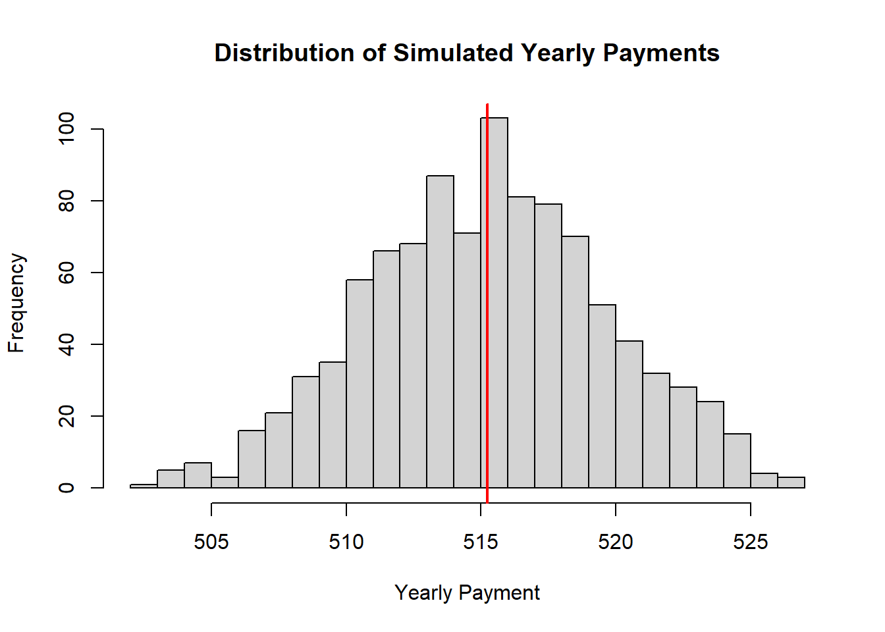
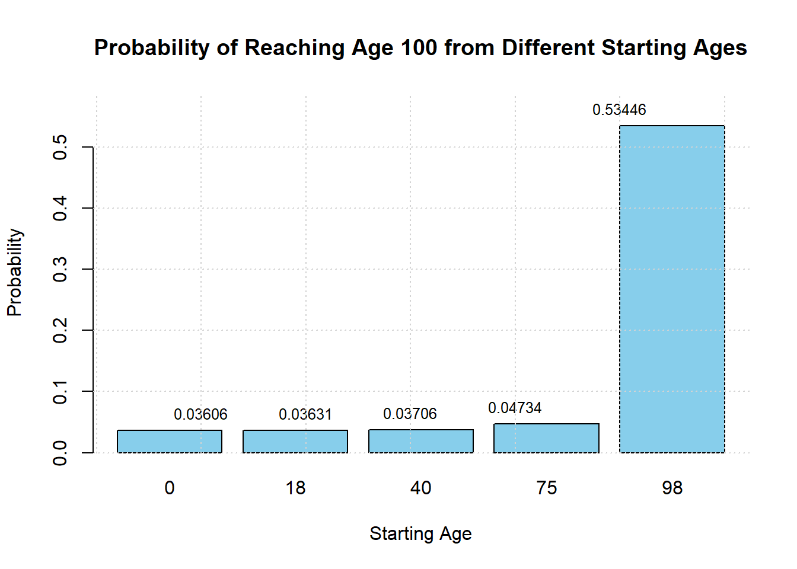

Life Insurance Analysis
Leo Cam
2023-01-22
1 Introduction
This document is divided into four parts, each focusing on different aspects of financial and actuarial analysis related to life insurance:
Cash Flows: Calculate Present Value (PV), Net Present Value (NPV), and Accumulated Value (AV) based on cash transactions.
Life Tables: Import and analyze survival probabilities from a mortality dataset.
Life Annuities: Calculate PV and Expected Present Value (EPV) of different annuities.
Life Insurance: Analyze premiums and EPV of various life insurance products.
2 Cash Flows
2.1 Present Value
Suppose you want to go on a trip 5 years from now. You have expenses of 3000 each year for 4 years (including this year), followed by an expense of 4000 and a final expense of 5000. How much would you have to deposit at this moment in time to cover all of these future payments? Assume a constant interest rate of 2.14% and payments would take place at the beginning of the year.
# We have an expense of 3000 from t=0 to t=3, an expense of 4000 at t=4 and 5000 at t=5
# Cash flows
cash_flows <- c(rep(3000,4), 4000, 5000)
# Interest Rate
i <- 0.0214
# Discount factor
v <- 1 / (1+i)
# Discount factors
discount_factors <- v ^ (0:5)
# Present value
present_val <- sum(cash_flows * discount_factors)
cat("Present Value (PV):", present_val)## Present Value (PV): 19800.98So you would have to make a deposit of 19800.98 at this current time to cover all of these future payments.
2.2 Net Present Value (NPV)
You’re the head of a lawn mowing company. You want to invest in a new lawn mower than you are confident will generate cash flows of 50 each month for 3 months, followed by 20 for 2 months. The issue is it costs 185 and you’re unsure if it will be a profitable investment. To find out if it is a good investment or not, you must calculate the NPV for this investment. Assume the monthly interest rate is 0.6%.
# Define the cash flows
# We have a negative cash flow at t=0 of 500, and 5 positive cash flows of 50 from t=1 to t=5
cash_flows <- c(0, rep(50,3), rep(30,2))
# Discount factors
discount_factors <- (1+0.006) ^ - (0:5)
# NPV
npv <- sum(cash_flows * discount_factors) - 185
cat("Net Present value (NPV) = ", npv)## Net Present value (NPV) = 21.62449Since our NPV is positive, this indicates that this would be an overall gain ie profit.
2.3 Accumulated Value
Suppose instead of making those expenses, you chose to put them into a savings account. What would be your new present value, assuming same interest rate. What would be your new accumulated value?
# Cash flows
cash_flows <- c(rep(3000,4), 4000, 5000)
# Define the discount function
discount <- function(s, t, i = 0.0214) {
(1 + i) ^ - (t - s)
}
# Calculate the pv
pv <- sum(cash_flows * discount(0, 0:5))
cat("Present Value =", pv)## Present Value = 19800.98# Calculate the value at time 6
av <- sum(cash_flows * discount(6, 0:5))
# Calculate the value at time 6, starting from present_value
cat("Value at time 6 from Present value =", pv * discount(6, 0))## Value at time 6 from Present value = 22483.39## Difference between Accumulated Value and Present Value = 2682.41As you can see, there would be a difference of $2682.41 if you saved the money instead of spending it.
2.4 Yearly Payments
Your parents want to start saving money for your university costs. Each year of study will set you guys back by about 7500. You’re currently 14 (t=0) and will start attending when you are 19 (t=5). Therefore, your parents will make 1 deposit each year for 4 years (t=1 to t=4). Assume you will attend for 4 years (t=5 to t=22), the constant annual interest rate is 3.14% and each deposit your parents make is equal. Find the amount of the deposit
# discount factors
discount_factors <- (1 + 0.0314) ^ - (0:8)
# deposit pattern
deposits <- c(0, rep(1, 4), rep(0, 4))
# university expenses
payments <- c(rep(0, 5), rep(7500, 4))
# Calculate the present value of the deposits
PV_deposit <- sum(deposits * discount_factors)
# Calculate the present value of the payments
PV_payment <- sum(payments * discount_factors)
# Calculate the yearly deposit K in the first 4 years
yearly_deposit <- PV_payment / PV_deposit
cat("Yearly deposits", yearly_deposit)## Yearly deposits 6627.546So your parents would have to make a deposit of 6627.546 for each of the 4 years to finance your university.
2.5 Varying Interest Rates
You want to take out a loan to open a new restaurant. You plan to take 1000 this year and 3000 next year. You plan to repay the money with equal yearly payments for the 10 years after next year (t=2 to t=11). Note this time the interest rate isn’t constant but changes over time. For the first 3 years it is 4%, then for the next 3 years it is 4.5%, then for the final 5 years it is 6%. How much will your yearly payments be?
# Interest rates
interest <- c(rep(0.04, 3), rep(0.045, 3), rep(0.06, 5))
# Yearly discount factors
yearly_discount_factors <- (1 + interest) ^ (-1)
# Discount factors
discount_factors <- cumprod(c(1, yearly_discount_factors))
# Cash flows for the first two years
cash_flow <- c(1000, 3000)
# Calculate the present value (PV) of the loan
PV_loan <- sum(cash_flow * discount_factors[1:2])
# Calculate the present value (PV) of the repayments
repayment_years <- 2:11
discount_factors_repayments <- discount_factors[repayment_years + 1]
n_payments <- length(discount_factors_repayments)
# yearly payment variable
yearly_payment <- PV_loan / sum(discount_factors_repayments)
# full cash flow vector with the repayments
cash_flow_full <- c(cash_flow, rep(-yearly_payment, n_payments))
# Calculate the PV of the repayments to check the balance
PV_repayments <- sum(cash_flow_full * discount_factors)
# Display the yearly payment and the PV balance check
cat("Yearly Payments", yearly_payment)## Yearly Payments 515.2757## Present value of the repayments -1.705303e-13Our PV is ~0, meaning the PV of the future payments and PV of your loans are equal, hence the yearly payments would be 515.2757
2.6 Yearly to Monthly Interest Rate
You plan to take out a 100,000 loan with a yearly interest rate of 2.88%. You want to pay back this loan with fixed monthly payments over the next 15 years. Find how much these monthly payments will be.
#number of payments
number_payments <- 12*15
#yearly interest rate
i <- 0.0288
#monthly interest rate
monthly_interest <- (1+i)^(1/12)-1
# Define the discount factors
discount_factors <- (1 + monthly_interest) ^ - (1:number_payments)
# Define the payment pattern
payments <- rep(1, number_payments)
# Calculate the monthly loan payment K
K <- 100000 / sum(payments * discount_factors)
cat("Monthly payments = ", K)## Monthly payments = 683.0401These monthly payments will be 683.0401
3 Life Tables
3.0.0.1 Import the life tables from mortality.org. We are going to import the dataset of Canada from 1921 - 2021.
3.0.0.2 Setting up variables
year <- life_table$Year
age <- life_table$Age
qx <- life_table$qx
mx <- life_table$mx
ax <- life_table$ax
lx <- life_table$lx
dx <- life_table$dx
Lx <- life_table$Lx
Tx <- life_table$Tx
ex <- life_table$ex
px <- 1 - qx| Variable | Description |
|---|---|
| Year | Year or range of years (for period and cohort data) |
| Age | Age group, representing an n-year interval from exact age x to just before x + n, where n = 1, 4, 5, or infinity |
| m(x) | Central death rate between ages x and x + n |
| q(x) | Probability of death between ages x and x + n |
| a(x) | Average length of survival between ages x and x + n for persons dying in the interval |
| l(x) | Number of survivors at exact age x, assuming l(0) = 100,000 |
| d(x) | Number of deaths between ages x and x + n |
| L(x) | Number of person-years lived between ages x and x + n |
| T(x) | Number of person-years remaining after exact age x |
| e(x) | Life expectancy at exact age x (in years) |
3.1 Mortality Rates
# Adjusting plot size and margins
par(xpd = TRUE, mar = c(5, 4, 4, 6) + 0.1, pin = c(5, 4)) # Adjusted margins and aspect ratio
# Function to convert age to numeric
convert_age <- function(x) {
x[x == "110+"] <- NA # Exclude "110+" from numeric conversion
suppressWarnings({
as.numeric(x)
})
}
age <- convert_age(age)
# Create a color palette
years <- unique(year)
color_palette <- colorRampPalette(c("blue", "green", "yellow", "red"))(length(years))
# Initialize the plot
plot(NULL,
xlim = range(age, na.rm = TRUE), # Exclude NAs from range calculation
ylim = c(0, 1.0), # Set y-axis range from 0 to 1.0
main = "Mortality rates (Canada, Males & Females, 1921-2021)",
xlab = "Age x",
ylab = expression(paste("Mortality rate ", q[x])),
type = "n" # Create an empty plot
)
# Plot each year's data
suppressWarnings({
for (i in seq_along(years)) {
year_data <- subset(life_table, Year == years[i])
# Exclude "110+" age category
year_data <- year_data[year_data$Age != "110+", ]
# Convert Age to numeric
year_data$Age <- convert_age(year_data$Age)
# Ensure data is sorted by Age for proper line connection
year_data <- year_data[order(year_data$Age), ]
lines(year_data$Age, year_data$qx, col = color_palette[i])
}
})
# Colored legend
legend("topright", inset = c(-0.2, 0),
legend = c("1921", "1955", "1988", "2021"),
col = color_palette[c(1, which.min(abs(years - 1955)),
which.min(abs(years - 1988)), length(years))],
lty = 1,
title = "Year")
We can see that mortality rates from recent years are much lower compared to the earliest years.
3.2 Life Expectancy
# Setting up the plot
par(xpd = TRUE, mar = c(5, 4, 4, 6) + 0.1) # To ensure plot doesn't cover data
# Create a color palette
years <- unique(year)
color_palette <- colorRampPalette(c("blue", "green", "yellow", "red"))(length(years))
plot3 <- suppressWarnings({
plot(NULL,
xlim = range(age, na.rm = TRUE), # Exclude NAs from range calculation
ylim = range(ex, na.rm = TRUE), # Exclude NAs from range calculation
main = "Life Expectancy (Canada, Males & Females, 1921-2021)",
xlab = "Age x",
ylab = expression(paste("Life Expectancy ", e[x])),
type = "l"
)
})
# Plot each year's data
suppressWarnings({
for (i in seq_along(years)) {
year_data <- subset(life_table, Year == years[i])
lines(year_data$Age, year_data$ex, col = color_palette[i], type = "l")
}
})
# Colored legend
legend("topright", inset = c(-0.2, 0),
legend = c("1921", "1955", "1988", "2021"),
col = color_palette[c(1, which.min(abs(years - 1955)),
which.min(abs(years - 1988)), length(years))],
lty = 1,
title = "Year")
As we can see, the life expectancy is much higher from the years ~ 2021 as opposed to the years from ~1921 or even ~1955. Note for the early years, the life expectancy starts extremely low at age 0 and after a couple years, has a sharp increase. This can be explained mainly because it was much more difficult for an infant to survive the initial years. In later years, thanks to modern medicine, the survival rate of infants have risen much higher.
Let us focus on the year 2021.
3.2.1 2021 Life Table
life_table <- life_table[year == 2021, ] #Getting only data from the year 2021
year <- life_table$Year
age <- life_table$Age
qx <- life_table$qx
mx <- life_table$mx
ax <- life_table$ax
lx <- life_table$lx
dx <- life_table$dx
Lx <- life_table$Lx
Tx <- life_table$Tx
ex <- life_table$ex
px <- 1 - qxlife_table_2021 <- life_table[year == 2021, ] #Getting only data from the year 2021
year <- life_table_2021$Year
age <- life_table_2021$Age
qx <- life_table_2021$qx
mx <- life_table_2021$mx
ax <- life_table_2021$ax
lx <- life_table_2021$lx
dx <- life_table_2021$dx
Lx <- life_table_2021$Lx
Tx <- life_table_2021$Tx
ex <- life_table_2021$ex
px <- 1 - qx3.2.2 Probability an invidual of age X dies before age Y, future life of age X
3.2.2.1 Finding the probability that an 23 year old dies before turning 24
## qx value 0.00072As we can see, it is a very low probability, < 0.098%
3.2.3 Plotting mortality rates
3.2.3.1 Plot the mortality rates in the year 2021
plot(age, qx,
main = "Mortality rates (Canada, 2021)",
xlab = "Age x",
ylab = expression(paste("Mortality rate ", q[x])),
type = "l")## Warning in xy.coords(x, y, xlabel, ylabel, log): NAs introduced by coercion
3.2.3.2 Plot the logarithm of the mortality rates in the year 2021
# Plot the logarithm of the mortality rates in the year 2021
plot(age, log(qx),
main = "Log mortality rates (Canada, 2021)",
xlab = "Age x",
ylab = expression(paste("Log mortality rate ", log(q[x]))),
type = "l")## Warning in xy.coords(x, y, xlabel, ylabel, log): NAs introduced by coercion
3.2.3.3 Plot the mortality rates of females vs males in the year 2021
3.2.3.4 Import the male/female datasets
#male data
life_table_m <- read.table("C:\\Users\\megacrazyleo\\Desktop\\SQL\\R\\mltper_1x1.txt", header=FALSE, skip = 3, sep = "")
colnames(life_table_m) <- c("Year", "Age", "mx", "qx", "ax", "lx", "dx", "Lx", "Tx", "ex")
male_2021 <- life_table_m[life_table_m$Year == 2021, ]
year_m <- male_2021$Year
age_m <- male_2021$Age
qx_m <- male_2021$qx
mx_m <- male_2021$mx
ax_m <- male_2021$ax
lx_m <- male_2021$lx
dx_m <- male_2021$dx
Lx_m <- male_2021$Lx
Tx_m <- male_2021$Tx
ex_m <- male_2021$ex
#female data
life_table_f <- read.table("C:\\Users\\megacrazyleo\\Desktop\\SQL\\R\\fltper_1x1.txt", header=FALSE, skip = 3, sep = "")
colnames(life_table_f) <- c("Year", "Age", "mx", "qx", "ax", "lx", "dx", "Lx", "Tx", "ex")
female_2021 <- life_table_f[life_table_f$Year == 2021, ]
year_f <- female_2021$Year
age_f <- female_2021$Age
qx_f <- female_2021$qx
mx_f <- female_2021$mx
ax_f <- female_2021$ax
lx_f <- female_2021$lx
dx_f <- female_2021$dx
Lx_f <- female_2021$Lx
Tx_f <- female_2021$Tx
ex_f <- female_2021$ex3.2.3.5 Plot male vs female mortality rates in the year 2021
plot(age_m, qx_m,
main = "Mortality rates (Canada, 2021)",
xlab = "Age x",
ylab = expression(paste("Mortality rate ", q[x])),
type = "l",
col = "blue",
) # Using log scale for y-axis to better show differences## Warning in xy.coords(x, y, xlabel, ylabel, log): NAs introduced by coercion## Warning in xy.coords(x, y): NAs introduced by coercion
# Create the plot with male data
plot(age_m, qx_m,
main = "Mortality rates (Canadian Males and Females, 2021)",
xlab = "Age x",
ylab = expression(paste("Mortality rate ", q[x])),
type = "l",
col = "blue",
log = "y",
ylim = range(c(qx_m, qx_f)) # Set y-axis limits to include both male and female data
)## Warning in xy.coords(x, y, xlabel, ylabel, log): NAs introduced by coercion## Warning in xy.coords(x, y): NAs introduced by coerciongrid()
# Add points to show actual data points
points(age_m, qx_m, pch = 20, cex = 0.5, col = "blue")## Warning in xy.coords(x, y): NAs introduced by coercion## Warning in xy.coords(x, y): NAs introduced by coercionlegend("bottomright",
legend = c("Males", "Females"),
col = c("blue", "red"),
lty = 1,
pch = 20,
cex = 0.8)
3.2.4 Probability for invidivual of age x to reach age y
3.2.4.1 Find the probability for a 0 year old female and male in Canada to reach the age of 100 in 2021
## [1] "Male probability: 0.01918"## [1] "Female probability: 0.05113"3.2.4.2 Find the probability for a 0 year old in Canada to reach the age of 100 in 2021
## [1] "M/F probability: 0.03606"If we compare this with an 18 year old individual
## [1] "M/F age 18 probability: 0.0363050591492575"Vs a 40 year old individual
## [1] "M/F age 40 probability: 0.0370583520029597"And again with a 75 year old individual
## [1] "M/F age 75 probability: 0.0473352585980572"Finally, compare with a 98 year old individual
## [1] "M/F age 98 probability: 0.534459759893286"# Calculate probabilities
ages <- c(0, 18, 75, 98)
probs <- c(
lx[100 + 1] / lx[0 + 1],
lx[100 + 1] / lx[18 + 1],
lx[100 + 1] / lx[40 + 1],
lx[100 + 1] / lx[75 + 1],
lx[100 + 1] / lx[98 + 1]
)
# Create a data frame
prob_data <- data.frame(Age = c("0", "18", "40", "75", "98"), Probability = probs)
# Create the bar plot
barplot(prob_data$Probability,
names.arg = prob_data$Age,
main = "Probability of Reaching Age 100 from Different Starting Ages",
xlab = "Starting Age",
ylab = "Probability",
col = "skyblue",
ylim = c(0, max(probs) * 1.1)) # Set y-axis limit to 110% of max probability
# Add value labels on top of each bar
text(x = 1:5,
y = probs,
labels = round(probs, 5),
pos = 3,
cex = 0.8)
# Add a grid for better readability
grid()
3.2.4.3 Plot the survival probabilties for (18) up to age 100
k <- 0:82
plot(k, lx[18 + k + 1] / lx[18 + 1],
pch = 20,
xlab = "k",
ylab = expression(paste(""[k], "p"[18])),
main = "Survival probabilities for age 18 up to 100") Compare this
with a 50 year old
Compare this
with a 50 year old
k <- 0:100
plot(k, lx[50 + k + 1] / lx[50 + 1],
pch = 20,
xlab = "k",
ylab = expression(paste(""[k], "p"[50])),
main = "Survival probabilities for age 50 up to 100")
3.2.4.4 Plot the number of deaths
# Plot the number of deaths dx by age
plot(age, dx,
type = "h",
pch = 20,
xlab = "Age x",
ylab = expression("d"[x]),
main = "Number of deaths (Canada, M/F, 2021)")## Warning in xy.coords(x, y, xlabel, ylabel, log): NAs introduced by coercion# Simulate the number of deaths using a binomial distribution
sims <- rbinom(n = length(lx), size = lx, prob = qx)
# Plot the simulated number of deaths on top of the previous graph
points(age, sims,
pch = 4,
col = "red")## Warning in xy.coords(x, y): NAs introduced by coercion
3.2.5 Probability that individual of age x survives y more years
3.2.5.1 Calculate the probability that (25) survives 5 more years
## [1] 0.99465193.2.5.2 Compute the survival probabilities of (25) until the age of 100
3.2.5.3 Extract the probability that (25) survives until the age of 100
## [1] 0.036455753.2.5.4 Plot the probabilties for (25) to reach the age of 26, 27, …, 100
plot(1:length(kpx), kpx,
pch = 20,
xlab = "k",
ylab = expression(paste(""[k], "p"[25])),
main = "Survival probabilities for (25)") ## Survival
probabilities and Curtate Expected Future Lifetime
## Survival
probabilities and Curtate Expected Future Lifetime
3.2.5.5 Compute the survival probabilities of (25)
3.2.5.7 Plot the deferred mortality probabilities of (25)
plot(0:(length(kqx) - 1), kqx,
pch = 20,
xlab = "k",
ylab = expression(paste(""['k|'], "q"[25])),
main = "Deferred mortality probabilities of (25)")
3.2.5.8 Survival probabilities and curtate expected future lifetime of (0)
## [1] 81.154373.2.5.9 Survival probabilities and curtate expected future lifetime of a 25 year old
## [1] 56.929833.2.6 Function to compute the curtate expected future lifetime for a given age and life table
## Warning: NAs introduced by coercion3.2.7 Curtate future lifetimes for all ages
valid_ages <- age2[!is.na(age2)]
future_lifetimes <- sapply(valid_ages, function(age) curtate_future_lifetime(age, life_table))
future_lifetimes## [1] 81.1543677 80.5105688 79.5298960 78.5410318 77.5512434 76.5582237 75.5651145 74.5696487 73.5741231 72.5800095 71.5850905 70.5908178 69.5964655 68.6041219
## [15] 67.6123554 66.6211462 65.6364726 64.6555127 63.6800911 62.7081227 61.7394924 60.7728498 59.8069016 58.8434061 57.8858039 56.9298305 55.9754109 55.0202271
## [29] 54.0692387 53.1157782 52.1705439 51.2217212 50.2729942 49.3263401 48.3821419 47.4349360 46.4966817 45.5558076 44.6187615 43.6831051 42.7421570 41.8093678
## [43] 40.8721760 39.9352163 38.9988144 38.0710959 37.1424222 36.2172289 35.2887176 34.3679418 33.4554587 32.5477149 31.6482716 30.7466863 29.8518913 28.9699729
## [57] 28.0901151 27.2168086 26.3505528 25.4885582 24.6421547 23.8018788 22.9662875 22.1393700 21.3176883 20.5058647 19.7077654 18.9142764 18.1290962 17.3552326
## [71] 16.5964804 15.8432337 15.1037931 14.3678121 13.6465357 12.9503749 12.2568738 11.5823800 10.9233889 10.2898577 9.6617391 9.0501785 8.4609740 7.8870176
## [85] 7.3383738 6.8153443 6.3136213 5.8359568 5.3771888 4.9556622 4.5677219 4.2107849 3.8717329 3.5497877 3.2682134 3.0078649 2.7581869 2.5286726
## [99] 2.3181631 2.1255148 1.9494822 1.7886795 1.6414429 1.5057902 1.3788531 1.2562353 1.1304400 0.9874820 0.7999053 0.5110800# Future lifetime by age
plot(age2[!is.na(age2)], future_lifetimes, type = 'l', lwd = 2, col = "green", xlab = "Age x", ylab = "Future lifetime", main = "Future lifetime by age")
3.2.7.1 Plot the logarithm of the male/female mortality rates for (18) by year
# Load the life table
life_table <- read.table("C:\\Users\\megacrazyleo\\Desktop\\SQL\\R\\bltper_1x1.txt", header=FALSE, skip = 3, sep = "")
colnames(life_table) <- c("Year", "Age", "mx", "qx", "ax", "lx", "dx", "Lx", "Tx", "ex")
# Ensure Age is numeric
life_table$Age <- as.numeric(life_table$Age)## Warning: NAs introduced by coercion# Subset the life table for age 18
subset_18 <- subset(life_table, Age == 18)
# Check if the subset has the same length for 'Year' and 'qx'
if (nrow(subset_18) > 0) {
# Plot the log mortality rates for age 18
with(subset_18,
plot(Year, log(qx),
type = "l", main = "Log mortality rates (Canada, M/F, 18-year-old)",
xlab = "Year t", ylab = expression(paste("Log mortality rate ", log(q[18])))))
} else {
print("No data available for age 18")
}
3.2.7.2 Plot the logarithm of the female mortality rates in the year 1950 by age
# Subset the life table for the year 1950
subset_1950 <- subset(life_table, Year == 1950)
# Check if the subset has the same length for 'Age' and 'qx'
if (nrow(subset_1950) > 0) {
# Plot the log mortality rates for the year 1950
with(subset_1950,
plot(Age, log(qx),
type = "l", main = "Log mortality rates (Canada, M/F, 1950)",
xlab = "Age x", ylab = expression(paste("Log mortality rate ", log(q[x])))))
} else {
print("No data available for the year 1950")
}
3.2.7.3 Construct and print the cohort life table for birth year 1981
3.2.7.5 1981 cohort survival probability that (18) survives 5 more years
## [1] 0.99701363.2.7.6 1881 cohort survival probability that (18) survives 5 more years
## [1] 0.91240453.2.7.7 PV of guaranteed payment of 10,000 in 5 years
## [1] 9057.3084 Life Annuities
4.0.0.1 PV of guaranteed payments of 10,000 in 5, 10 and 30 years
## [1] 9057.308 8203.483 5520.7094.0.0.3 EPV of pure endowments of 10,000 in 5, 10 and 30 years for (20)
## [1] 9031.705 8158.312 NA4.1 Whole Life Annuity Due
A type of annuity where payments are made at the beginning of each period, starting immediately upon purchase and continuing for the lifetime of the annuitant. Payments start immediately and occur at the beginning of each payment period (e.g., monthly, annually)
4.1.0.1 Calculating the whole life annuity due of a 35 year old
kpx <-
c(1, cumprod(px[(35+1):length(px)]))
discount_facotrs <- (1+0.03)^-(0:(length(kpx)-1))
benefits <- rep(1,length(kpx))
sum(benefits*discount_factors*kpx)## Warning in benefits * discount_factors: longer object length is not a multiple of shorter object length## Warning in benefits * discount_factors * kpx: longer object length is not a multiple of shorter object length## [1] 145.98064.2 Whole Life Immediate Annuity
A type of annuity where payments are made at the end of each period, starting immediately upon purchase and continuing for the lifetime of the annuitant. Payments start immediately but occur at the end of each payment period (e.g., monthly, annually).
4.2.0.1 Calculating the whole life immediate annuity of a 35 year old
kpx <-
c(1, cumprod(px[(35+1):length(px)]))
discount_facotrs <- (1+0.03)^-(1:(length(kpx)))
benefits <- rep(1,length(kpx))
sum(benefits*discount_factors*kpx)## Warning in benefits * discount_factors: longer object length is not a multiple of shorter object length## Warning in benefits * discount_factors * kpx: longer object length is not a multiple of shorter object length## [1] 145.98064.3 Expected Present Value
4.3.1 Function to compute the EPV of a whole life annuity due for a given age, interest rate i and life table
4.4 Shiny App for Life Annuity Calculator
library(shiny)
ui <- fluidPage(
titlePanel("Life Annuity Calculator"),
sidebarLayout(
sidebarPanel(
numericInput("age", "Age:", 20, min = 0, max = 110),
numericInput("interest", "Interest Rate:", 0.02, min = 0, max = 0.2, step = 0.001),
radioButtons("type", "Annuity Type:", choices = c("Due" = "due", "Immediate" = "immediate"))
),
mainPanel(
h3("Expected Present Value:"),
textOutput("epv")
)
)
)
server <- function(input, output) {
output$epv <- renderText({
if (input$type == "due") {
epv <- life_annuity_due(input$age, input$interest, life_table)
} else {
epv <- life_immediate_annuity(input$age, input$interest, life_table)
}
paste0("$", round(epv, 2))
})
}
shinyApp(ui = ui, server = server)4.4.0.1 EPV of a whole life annuity due for (20) at interest rate 2% using life_table
## [1] 30.52224.4.0.2 EPV of a whole life annuity due for (20) at interest rate 5% and for (65) at interest rate 2% using life_table
## [1] 18.09666## [1] 11.945894.4.0.3 EPV of a whole life annuity due for (20) at interest rate 2% using life_table
## [1] 30.52224.4.1 Function to compute the EPV of a whole life immediate annuity for a given age, interest rate i and life table
life_immediate_annuity <- function(age, i, life_table) {
px <- 1 - life_table$qx
kpx <- cumprod(px[(age + 1):length(px)])
discount_factors <- (1 + i) ^ - (1:length(kpx))
sum(discount_factors * kpx)
}4.4.1.1 EPV of a whole life immediate annuity for (20) at interest rate 2% using life_table
## [1] 29.52224.4.2 Function to compute the EPV of a temporary life annuity due for a given age, period of n years, interest rate i and life table
4.5 Shiny app for Temporary Life Annuity Calculator
library(shiny)
ui <- fluidPage(
titlePanel("Temporary Life Annuity Calculator"),
sidebarLayout(
sidebarPanel(
numericInput("age", "Age:", 20, min = 0, max = 110),
numericInput("term", "Term (years):", 10, min = 1, max = 50),
numericInput("interest", "Interest Rate:", 0.02, min = 0, max = 0.2, step = 0.001)
),
mainPanel(
h3("Expected Present Value:"),
textOutput("epv")
)
)
)
server <- function(input, output) {
output$epv <- renderText({
epv <- temporary_life_annuity_due(input$age, input$term, input$interest, life_table)
paste0("$", round(epv, 2))
})
}
shinyApp(ui = ui, server = server)4.6 Pension Valuation
4.6.1 Calculating the PV of a pension at age 65
benefits <- 20000 * 1.02 ^ (0:35)
# Discount factors (to age 65)
discount_factors <- 1.04 ^ - (0:35)
# PV of pension at age 65
PV_65 <- sum(benefits * discount_factors)
PV_65## [1] 523061## [1] 138317.54.6.2 EPV of pension at age 20
# Survival probabilities of (65) up to age 100
px <- 1 - life_table$qx
kpx <- c(1, cumprod(px[(65 + 1):(99 + 1)]))
# EPV of pension at age 65
EPV_65 <- sum(benefits * discount_factors * kpx)
cbind(PV_65, EPV_65)## PV_65 EPV_65
## [1,] 523061 239587.2# EPV of pension at age 20
EPV_20 <- EPV_65 * (1.03 ^ - 45 * prod(px[(20 + 1):(64 + 1)]))
cbind(PV_20, EPV_20)## PV_20 EPV_20
## [1,] 138317.5 42596.324.6.3 Retirement Plan
You’re planning for your retirement at age 40. You want to buy an annuity that will provide you 10000 annually for life, starting at age 65. If you die before the annuity starts, you get paid nothing.
# Survival probabilities of (40)
kpx <- c(1, cumprod(px[(40 + 1):length(px)]))
# Discount factors (to age 40)
discount_factors <- (1 + 0.03) ^ -(0:(length(kpx) - 1))
# Pension benefits
benefits <- c(rep(0, 25), rep(10000, length(kpx) - 25))
# The single premium
single_premium <- sum(benefits * discount_factors * kpx)
single_premium## [1] 38954.59Suppose you want to finance this deferred life annuity with annual premiums payable for 25 years beginning at age 40. However, you plan to reduce your work hours from age 55 onwards, therefore the premium will reduce by 1 half after 15 years. What is the initial premium you will pay
# Premium pattern rho
rho <- c(rep(1, 15), rep(0.5, 10), rep(0, length(kpx) - 25))
# The initial premium
initial_premium <- single_premium / sum(rho * discount_factors * kpx, na.rm = TRUE)
initial_premium## [1] 2763.3# The annual premiums
annual_premiums <- initial_premium * rho
# Filter out the zero values from the annual premiums
filtered_annual_premiums <- annual_premiums[annual_premiums != 0]
# Sum of the annual premiums (no actuarial discounting)
sum(filtered_annual_premiums)## [1] 55266Find out if this product would be a favorable deal for you. How much would you receive if you died instead at 75, or 95?
## [1] 31.9023# Present value of annuity benefits when (40) lives until age 75
subset1 <- 1:36
sum(benefits[subset1] * discount_factors[subset1])## [1] 45516.78# Present value of annuity benefits when (40) lives until age 95
subset2 <- 1:56
sum(benefits[subset2] * discount_factors[subset2])## [1] 98388.865 Life Insurance
You have bought a life insurance that is sold to 20 year olds and will pay 10000 at the end of the year of death if your death occurs at age 30. How much is the expected present value (EPV)
## [1] 0.9589195## [1] 0.0009397411## [1] 0.8963237## [1] 8.4231235.1 Whole, Temporary and Deferred Life Insurance
5.1.1 Function to find EPV of a whole life Insurance
# Define the whole life insurance function
whole_life_insurance <- function(age, i, life_table_2021) {
qx <- life_table_2021$qx
px <- 1 - qx
kpx <- c(1, cumprod(px[(age + 1):(length(px) - 1)]))
kqx <- kpx * qx[(age + 1):length(qx)]
discount_factors <- (1 + i) ^ - (1:length(kqx))
sum(discount_factors * kqx, na.rm = TRUE)
}
# Function to plot EPV by age
plot_by_age <- function(life_table_2021, interest_rate = 0.03) {
ages <- 0:(length(life_table_2021$qx) - 1)
epvs <- sapply(ages, function(age) whole_life_insurance(age, interest_rate, life_table_2021))
plot(ages, epvs, type = "l", col = "blue",
main = "EPV of Whole Life Insurance by Age",
xlab = "Age", ylab = "EPV", lwd = 2)
}
# Function to plot EPV by interest rate for a given age
plot_by_interest_rate <- function(life_table_2021, target_age = 20) {
interest_rates <- seq(0.01, 0.1, by = 0.01)
epvs <- sapply(interest_rates, function(i) whole_life_insurance(target_age, i, life_table_2021))
plot(interest_rates, epvs, type = "l", col = "red",
main = paste("EPV of Whole Life Insurance for Age", target_age, "by Interest Rate"),
xlab = "Interest Rate", ylab = "EPV", lwd = 2)
}
# Plot the EPV by age
plot_by_age(life_table_2021, interest_rate = 0.03)

5.2 Temporary Life Insurance
5.2.0.1 Finding the EPV of a life insurance where the coverage is restricted in time for a 20 year old in Canada in 2021 using an interest rate of 2%
# EPV of a whole life insurance for (20) at interest rate 2% using life_table
whole_life_insurance(20, 0.02, life_table_2021)## [1] 0.301949# Function to compute the EPV of a temporary life insurance
temporary_life_insurance <- function(age, n, i, life_table_2021) {
qx <- life_table_2021$qx
px <- 1 - qx
kpx <- c(1, cumprod(px[(age + 1):(age + n - 1)]))
kqx <- kpx * qx[(age + 1):(age + n)]
discount_factors <- (1 + i) ^ - (1:length(kqx))
sum(discount_factors * kqx)
}
# EPV of a temporary life insurance for (20) over a period of 45 years at interest rate 2% using life_table_2021
temporary_life_insurance(20, 45, 0.02, life_table_2021)## [1] 0.059754# EPV of a whole life insurance for (20) at interest rate 2% using life_table
whole_life_insurance(20, 0.02, life_table_2021)## [1] 0.3019495.3 Deferred Life Insurance
5.3.0.1 Calculating EPV of a deferred life insurance for constant interest rate on age x
# Function to compute the EPV of a deferred whole life insurance
deferred_life_insurance <- function(age, u, i, life_table_2021) {
qx <- life_table_2021$qx; px <- 1 - qx
kpx <- c(1, cumprod(px[(age + 1):(length(px) - 1)]))
kqx <- kpx * qx[(age + 1):length(qx)]
discount_factors <- (1 + i) ^ - (1:length(kqx))
benefits <- c(rep(0, u), rep(1, length(kpx) - u))
sum(benefits * discount_factors * kqx)
}
# EPV of a deferred life insurance for (20) deferred over 45 years at interest rate 2% using life_table_2021
deferred_life_insurance(20, 45, 0.02, life_table_2021)## [1] 0.2421955.3.0.2 Suppose you are age 48 and want to insure a benefit of 40000 for death between the ages of 55 and 75. Assume interest rate is 5%
# Deferred mortality probabilites of (48)
kqx <- c(1, cumprod(px[(48 + 1):(73 + 1)])) * qx[(48 + 1):(74 + 1)]
i <- 0.05
# Discount factors
discount_factors <- (1 + i) ^ - (1:length(kqx))
# Death benefits
benefits <- c(rep(0, 7), rep(40000, length(kqx) - 7))
# EPV of the death benefits
EPV_death_benefits <- sum(benefits * discount_factors * kqx)
EPV_death_benefits## [1] 2377.9265.4 Shiny App for Life Insurance Calculator
library(shiny)
ui <- fluidPage(
titlePanel("Life Insurance Calculator"),
sidebarLayout(
sidebarPanel(
numericInput("age", "Age:", 20, min = 0, max = 110),
numericInput("interest", "Interest Rate:", 0.02, min = 0, max = 0.2, step = 0.001),
selectInput("type", "Insurance Type:",
choices = c("Whole Life" = "whole",
"Temporary" = "temp",
"Deferred" = "deferred")),
conditionalPanel(
condition = "input.type == 'temp' || input.type == 'deferred'",
numericInput("term", "Term/Deferment (years):", 10, min = 1, max = 50)
)
),
mainPanel(
h3("Expected Present Value:"),
textOutput("epv")
)
)
)
server <- function(input, output) {
output$epv <- renderText({
epv <- switch(input$type,
"whole" = whole_life_insurance(input$age, input$interest, life_table),
"temp" = temporary_life_insurance(input$age, input$term, input$interest, life_table),
"deferred" = deferred_life_insurance(input$age, input$term, input$interest, life_table))
paste0("$", round(epv, 2))
})
}
shinyApp(ui = ui, server = server)